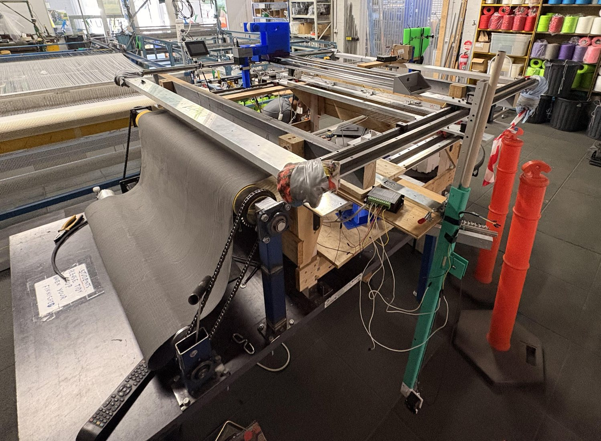
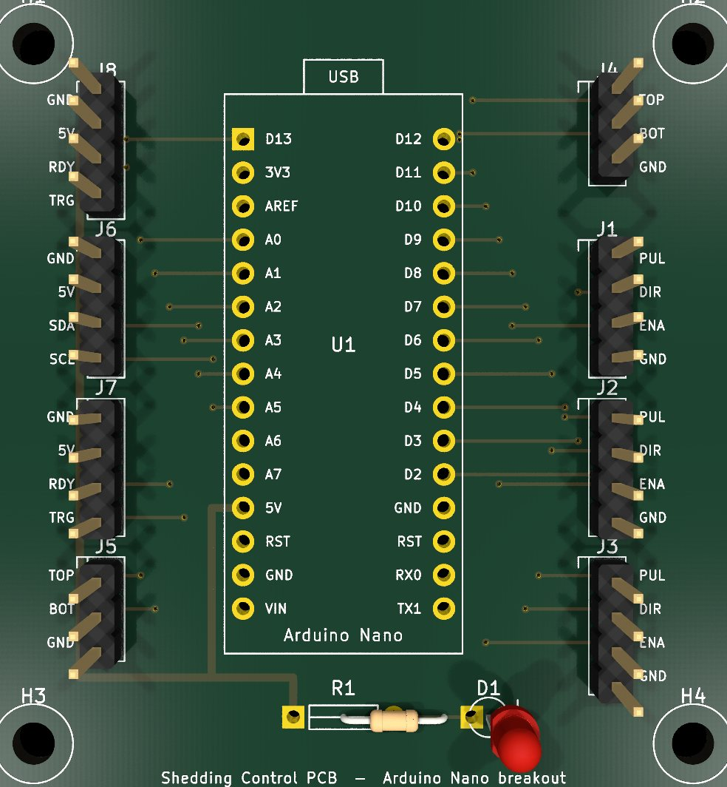
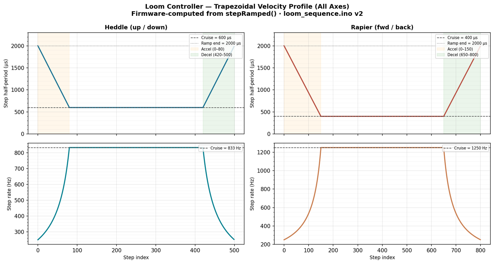

Automated Weaving Control System
A semi-automated industrial weaving machine whose heddle, rapier and comb mechanisms existed but moved independently. The brief: make them run as one coordinated, repeatable automated system.



Approach
Treated as a mechanically-coupled, open-loop sequencing problem on stepper-driven axes. Each axis was characterised on the bench (homing, limit handling, trapezoidal motion), then folded into a master sequencer driving the full pick cycle (shed open → rapier insertion → beat-up → shed exchange) directly from an Arduino, no PC in the loop.
Outcome
A repeatable, collision-free weaving cycle across all three axes, with deterministic homing and over-travel protection, and a fab-ready control board: a working baseline the next iteration builds on.